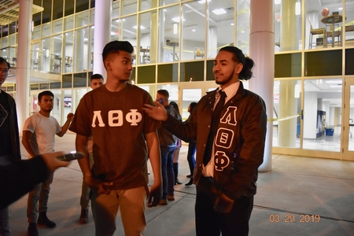

Avinash Singh
College Student pursuing a B.S. in Computer Science
College Student pursuing a B.S. in Computer Science
My name is Avinash Singh and I am a first year Computer Science Major at the University of North Carolina at Greensboro. Before I arrived at college, I developed websites for non-profit organizations through a program called Code the Dream which helps minority groups learn how to code. Throughout my time here at UNCG, I hope to sucessfully create my own business utilizing the skills that I learn in class everyday. To acquire internships during my time in undergrad would be very helpful to growing my potential and becoming a great developer. Currently, I am involved in various clubs throughout the school, but I am also a brother of Lambda Theta Phi Latin Fraternity Incorperated wheere I am able to further my involvement in minority communities and use my voice for those who cannot.
